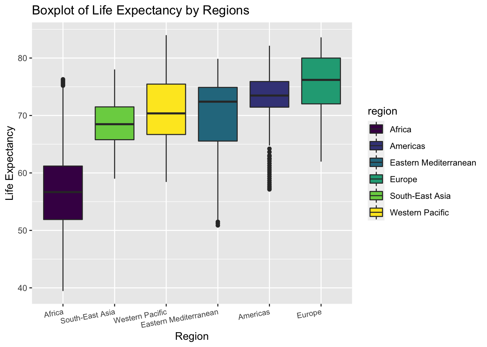
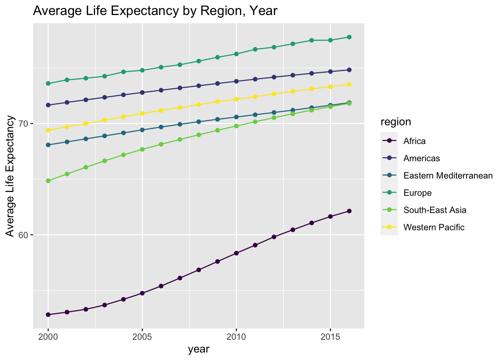
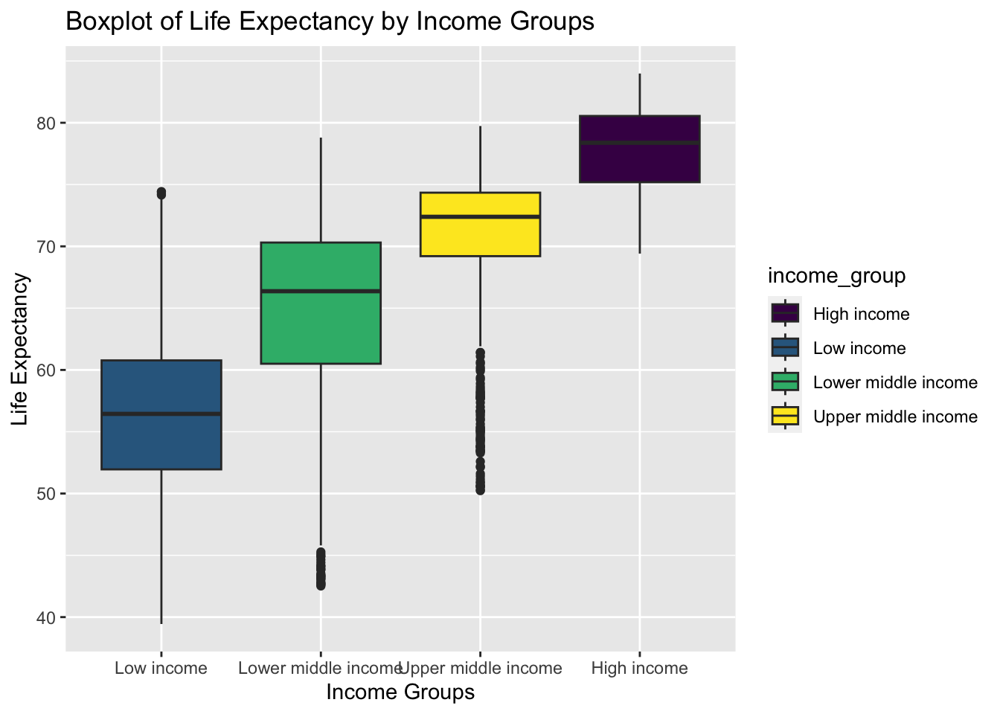
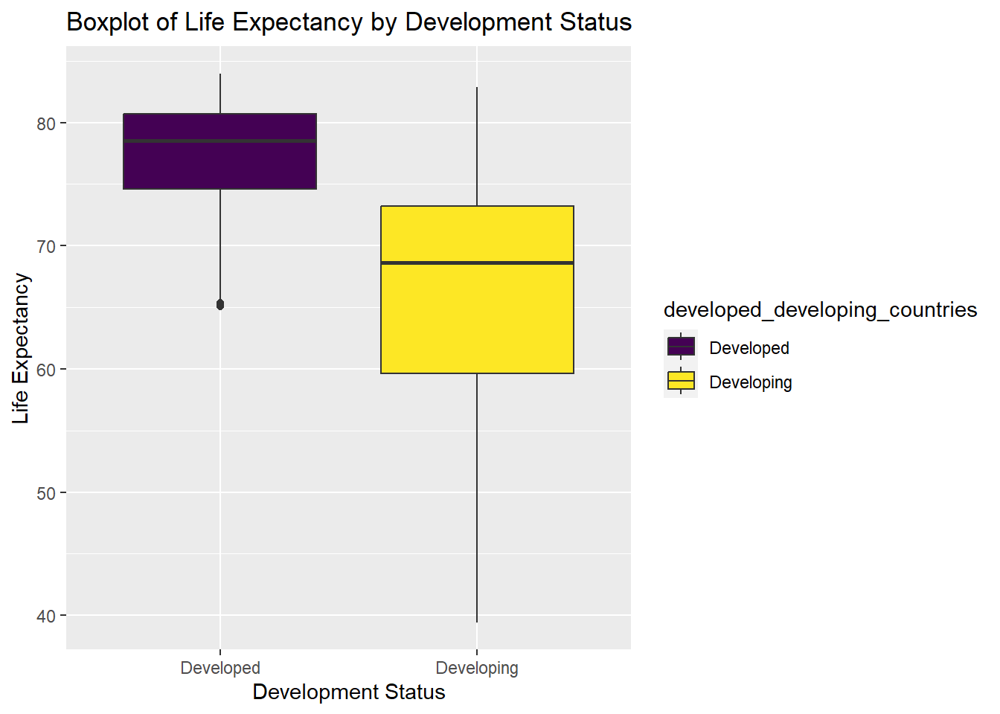

Our main datasets is WHO Life Exp Dataset, which covers the years 2000-2016 for 183 countries, including 32 variables.
While looking at the mortality rate columns in our life expectancy dataset, we found out that the mortality rate has been divided into several age groups–adults, infants, and children with age 1-4. In the meantime, life expectancy has also been divided into two directions–one is the overall countrywide life expectancy, and another one is the life expectancy for people who are older than 60 years old.
Based on this information, we started to wonder whether the causes of death vary at different ages. Under the idea of stratify analysis, we looked into the causes of death in three different age groups.
The death of infants and young children is largely related to the level of medical care, sanitary conditions, the mother’s level of education, the physical and psychological conditions of the mother during childbirth, the support from the country, and so on.
The causes of death of young and middle-aged people are related to social development, employment pressure, work fatigue, environmental pollution, over use of tobacco and alcohol, obesity and other problems. Noncommunicable disease is now the leading cause of death worldwide, and according to WHO, cardiovascular diseases, cancer, chronic respiratory diseases, and diabetes account for the most NCD deaths. These deaths can be attributed to tobacco use, physical inactivity, alcohol, and unhealthy diets. For instance, heart-related diseases, alcohol abuse in young people could be linked. We think these NCDs are very much associated with young adult deaths, since excessive smoking and alcohol addiction, bad diet, tend to occur in young and middle-aged people.
In the end, the death of the elderly may be related to the level of medical care, social welfare, social culture, clean resources, and so on. In addition to the diseases caused by normal aging and cancer, which cannot be cured by the current medical level, the life expectancy of the elderly may be related to whether the hospital is close to them, whether they can afford the medical expenses, whether they have children to take care of them, whether the social welfare is complete, and whether the policies and public facilities are friendly to the elderly.
Based on these ideas, we looked through several papers to generate more variables that we thought would relate to life expectancy.
We designed a shiny app to display several variables’ distribution around the world on an interactive world map. The variables include life expectancy, adult mortality rate, infant mortality rate, alcohol consumption level, Body Mass Index (BMI) and Current Health Expenditure (CHE).
Each variable has a link on the navigation bar that will direct you to its separate page. There is a sidebar on each page which is designed to choose the specific year that you are interested in. Three tabs are set in each page.
The Upper tab is the interactive world map. It displays the variable’s value of each country in the world. You may zoom in to examine the detailed annotations of each country’s data. And you may zoom out to grasp the overall distribution of this variable across countries.
The left tab is the description of the map. We chose the year of 2015 as an example to provide interpretation of each variable. This example works as an instruction for the interactive world map, meaning that users can interpret the variables in other years in similar ways.
The right tab is the boxplot showing the distribution of each variable by region.
You may have access to our shiny app by clicking on the link at the navigation bar or click here
We also attached our source code to the app. If you are interested in how we built the map using dashboard and shiny, you may click on the button on the top right corner.
data %>%
janitor::clean_names() %>%
group_by(region) %>%
summarise(avg_by_region = mean(une_life,na.rm = T)) %>%
arrange(avg_by_region) %>%
knitr::kable(digits = 3)| region | avg_by_region |
|---|---|
| Africa | 57.070 |
| South-East Asia | 68.754 |
| Eastern Mediterranean | 70.070 |
| Western Pacific | 71.604 |
| Americas | 73.347 |
| Europe | 75.700 |
The table shows the arranged average life expectancy of each region from 2000 to 2016.
The range of average life expectancy among regions is about 8 years.
Europe has the highest average life expectancy while Africa has the lowest.
data %>%
janitor::clean_names() %>%
group_by(region) %>%
ggplot(aes(x = fct_reorder(region,une_life), y = une_life, fill = region)) +
geom_boxplot() +
labs(title = "Boxplot of Life Expectancy by Regions") +
xlab("Region") +
ylab("Life Expectancy") +
theme(axis.text.x = element_text(hjust = 1, angle = 10,size = 8))
The boxplot shows the distribution of life expectancy in each region.
The variance of life expectancy is higher in Eastern Mediterranean and Africa.
The Americas has many outliers with low life expectancy
We can roughly tell from the plot that the variances of life expectancy among regions are not equal. Thus, we may perform a statistical test to check heteroscedasticity
\[H_0: Equal\ \ variance \ \ among\ \ regions \ \text { vs } \ H_1: Unequal\ \ variance \]
bartlett.test(une_life ~ factor(region),data = data) %>%
broom::tidy() %>%
knitr::kable()| statistic | p.value | parameter | method |
|---|---|---|---|
| 318.8595 | 0 | 5 | Bartlett test of homogeneity of variances |
The null hypothesis for Bartlett test is that the variances are equal. The result shows that the p-value is less than 0.05. Thus, we may reject the null and conclude that the variances of life expectancy among different regions is not equal. Consequently, we cannot perform ANOVA to test the difference of mean life expectancy in all the six regions. We should perform t.test between two selected regions separately.
From the boxplot above, we find that the life expectancy in Americas and Europe distribute almost in the same interval. Though the median of Europe is higher, the variance in Americas seems smaller. Thus, we want to study if the mean life expectancy in the two regions are significantly different.
Americas <- data %>%
janitor::clean_names() %>%
filter(region == "Americas") %>%
pull(une_life)
Europe <- data %>%
janitor::clean_names() %>%
filter(region == "Europe") %>%
pull(une_life) In order to decide on which type of t.test we should perform, we need to compare the variance in Americas and Europe first.
We can roughly tell from the boxplot that Americas has a smaller variance. But there also exist many outliers with low life expectancy values in Americas. Thus, we turn to statistical test to decide on the relationship.
\[H_0: \sigma^2_{Americas} =\ \sigma^2_{Europe}\ \text { vs } \ H_1: \sigma^2_{Americas} \neq\ \sigma^2_{Europe} \]
var.test(Americas,Europe,alternative = "two.sided",conf.level = 0.95) %>%
broom::tidy() %>%
knitr::kable()## Multiple parameters; naming those columns num.df, den.df| estimate | num.df | den.df | statistic | p.value | conf.low | conf.high | method | alternative |
|---|---|---|---|---|---|---|---|---|
| 0.7259117 | 560 | 849 | 0.7259117 | 4.12e-05 | 0.6248981 | 0.8452553 | F test to compare two variances | two.sided |
The null hypothesis for the variance test is that the two variance are equal. The result shows that the p-value is much less than 0.05. Thus, we may reject the null hypothesis and conclude that the variances are not equal. Next, we should perform 2 sample t.test with unknown and unequal variance.
\[H_0: \text{mean life_exp}_{Americas} = \ \text{mean life_exp}_{Europe}\ \text { vs } \ H_1: \text{mean life_exp}_{Americas} \neq \text{mean life_exp}_{Europe} \]
t.test(Americas,Europe,alternative = "less",conf.level = 0.95,paired = F,var.equal = FALSE ) %>%
broom::tidy() %>%
knitr::kable()| estimate | estimate1 | estimate2 | statistic | p.value | parameter | conf.low | conf.high | method | alternative |
|---|---|---|---|---|---|---|---|---|---|
| -2.352754 | 73.34729 | 75.70004 | -9.837228 | 0 | 1320.964 | -Inf | -1.959081 | Welch Two Sample t-test | less |
The null hypothesis for the t.test is that the two variance are equal. The result shows that the p-value is much less than 0.05. Thus, we may reject the null hypothesis and conclude that the mean of life expectancy in Americas and Europe are different. Since the test statistics is negative, we know that mean life expectancy in Americas is smaller than Europe.
We can tell from the boxplot above that the boxes of Western Pacific and South-East Asia are almost overlapping. The majority of them seem to be over 65 years. Thus we are interested in comparing the proportion of life expectancy over 65 year in the two regions.
\[H_0: \text{Proportion}_{Western\ Pacific} = \ \text{Proportion}_{South-East\ Asia}\ \text { vs } \ H_1: \text{mean life_exp}_{Western\ Pacific} \neq \text{mean life_exp}_{South-East\ Asia} \]
data %>%
janitor::clean_names() %>%
filter(region == "Western Pacific") %>%
summarise(above_65 = sum(une_life > 65),
total = n()) %>%
knitr::kable()| above_65 | total |
|---|---|
| 304 | 357 |
data %>%
janitor::clean_names() %>%
filter(region == "South-East Asia") %>%
summarise(above_65 = sum(une_life > 65),
total = n()) %>%
knitr::kable()| above_65 | total |
|---|---|
| 149 | 187 |
prop.test(c(304,149),n = c(357,187),correct = F) %>%
broom::tidy() %>%
knitr::kable()| estimate1 | estimate2 | statistic | p.value | parameter | conf.low | conf.high | method | alternative |
|---|---|---|---|---|---|---|---|---|
| 0.8515406 | 0.7967914 | 2.640731 | 0.1041556 | 1 | -0.0137086 | 0.1232069 | 2-sample test for equality of proportions without continuity correction | two.sided |
The null hypothesis for the prop.test is that the two proportions are equal. The result shows that the p-value is approximately 0.104. Thus, under the significance level of 0.05, we fail to reject the null. We have evidence that the proportion of life expectancy above 65 in Western Pacific is the same as in South-East Asia.
data %>%
janitor::clean_names() %>%
group_by(region,year) %>%
summarise(avg_by_year_region = mean(une_life,na.rm = T)) %>%
pivot_wider(
names_from = region,
values_from = avg_by_year_region
) %>%
knitr::kable(digits = 3)| year | Africa | Americas | Eastern Mediterranean | Europe | South-East Asia | Western Pacific |
|---|---|---|---|---|---|---|
| 2000 | 52.816 | 71.661 | 68.080 | 73.602 | 64.851 | 69.400 |
| 2001 | 53.040 | 71.900 | 68.350 | 73.923 | 65.463 | 69.706 |
| 2002 | 53.294 | 72.129 | 68.619 | 74.072 | 66.068 | 69.995 |
| 2003 | 53.681 | 72.354 | 68.889 | 74.252 | 66.644 | 70.304 |
| 2004 | 54.192 | 72.580 | 69.159 | 74.642 | 67.181 | 70.611 |
| 2005 | 54.744 | 72.789 | 69.425 | 74.784 | 67.677 | 70.899 |
| 2006 | 55.385 | 72.994 | 69.684 | 75.063 | 68.134 | 71.175 |
| 2007 | 56.106 | 73.201 | 69.930 | 75.287 | 68.566 | 71.439 |
| 2008 | 56.840 | 73.395 | 70.161 | 75.613 | 68.983 | 71.692 |
| 2009 | 57.594 | 73.601 | 70.378 | 75.957 | 69.388 | 71.970 |
| 2010 | 58.343 | 73.796 | 70.585 | 76.255 | 69.780 | 72.185 |
| 2011 | 59.065 | 73.985 | 70.788 | 76.672 | 70.161 | 72.409 |
| 2012 | 59.807 | 74.170 | 70.993 | 76.863 | 70.526 | 72.657 |
| 2013 | 60.445 | 74.343 | 71.203 | 77.166 | 70.873 | 72.892 |
| 2014 | 61.062 | 74.512 | 71.420 | 77.483 | 71.204 | 73.113 |
| 2015 | 61.641 | 74.669 | 71.645 | 77.493 | 71.516 | 73.316 |
| 2016 | 62.131 | 74.826 | 71.875 | 77.773 | 71.809 | 73.504 |
data %>%
janitor::clean_names() %>%
group_by(region,year) %>%
summarise(avg_by_year_region = mean(une_life,na.rm = T)) %>%
ggplot(aes(x = year, y = avg_by_year_region, color = region)) +
geom_line() + geom_point() + labs(title = "Average Life Expectancy by Region, Year") + ylab ("Average Life Expectancy")
data %>%
janitor::clean_names() %>%
filter(!is.na(income_group)) %>%
group_by(income_group) %>%
summarise(avg_by_income = mean(une_life,na.rm = T)) %>%
arrange(avg_by_income) %>%
knitr::kable(digits = 3)| income_group | avg_by_income |
|---|---|
| Low income | 56.798 |
| Lower middle income | 64.725 |
| Upper middle income | 70.861 |
| High income | 77.818 |
data %>%
janitor::clean_names() %>%
filter(!is.na(income_group)) %>%
group_by(income_group) %>%
ggplot(aes(x = fct_reorder(income_group,une_life), y = une_life,fill = income_group)) +
geom_boxplot() +
labs(title = "Boxplot of Life Expectancy by Income Groups") +
xlab("Income Groups") +
ylab("Life Expectancy")
\[H_0: \sigma^2_{group \ i} =\ \sigma^2_{group \ j}\ \text { vs } \ H_1: \sigma^2_{group\ i} \neq\ \sigma^2_{group\ j} \]
\[H_0: \text{mean life_exp}_{group \ i} = \ \text{mean life_exp}_{group \ j}\ \text { vs } \ H_1: \text{mean life_exp}_{group \ i} \neq \text{mean life_exp}_{group\ j} \]
data %>%
janitor::clean_names() %>%
group_by(developed_developing_countries) %>%
summarise(avg_by_dev = mean(une_life,na.rm = T)) %>%
knitr::kable(digits = 3)| developed_developing_countries | avg_by_dev |
|---|---|
| Developed | 77.403 |
| Developing | 66.122 |
data %>%
janitor::clean_names() %>%
group_by(developed_developing_countries) %>%
ggplot(aes(x = developed_developing_countries, y = une_life,fill = developed_developing_countries)) +
geom_boxplot() +
labs(title = "Boxplot of Life Expectancy by Development Status") +
xlab("Development Status") +
ylab("Life Expectancy")
\[H_0: \sigma^2_{developing} =\ \sigma^2_{developed}\ \text { vs } \ H_1: \sigma^2_{developing} \neq\ \sigma^2_{developed} \]
\[H_0: \text{mean life_exp}_{developing} = \ \text{mean life_exp}_{developed}\ \text { vs } \ H_1: \text{mean life_exp}_{developing} \neq \text{mean life_exp}_{developed} \]
In this part, we applied statistical analysis to studying the differences in life expectancy caused by various factors. We first examine the distribution features and then choose appropriate tests to perform.
We draw the following conclusions from the tests and plots result :
Life expectancy in Americas and Europe have significantly different means.
Europe has the highest mean life expectancy in the world.
Africa has the lowest life expectancy in the world.
Western Pacific and South-East Asia has approximately the same proportion of life expectancy over 65.
Average life expectancy are significantly different among income groups and development status groups. People with higher income and from more developed countries tend to live longer.